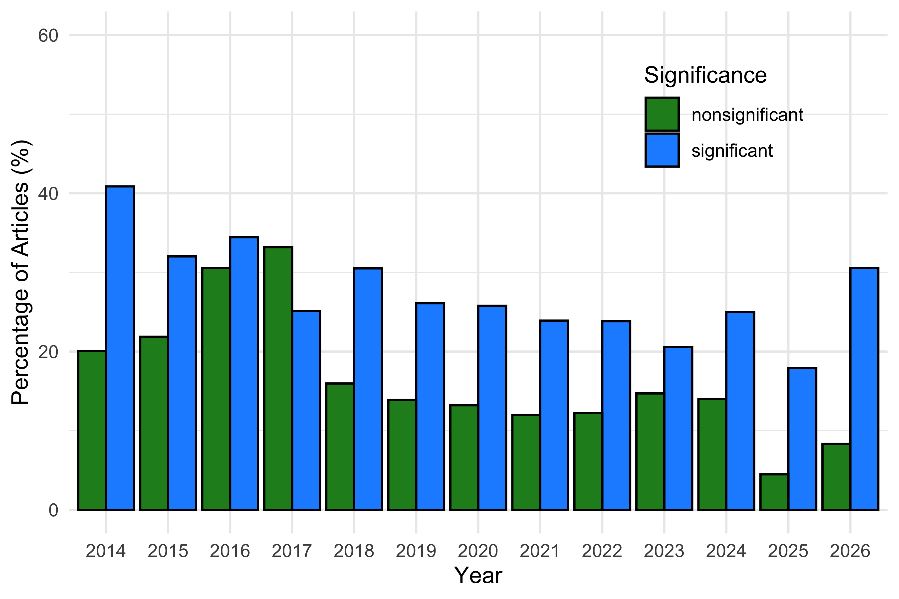
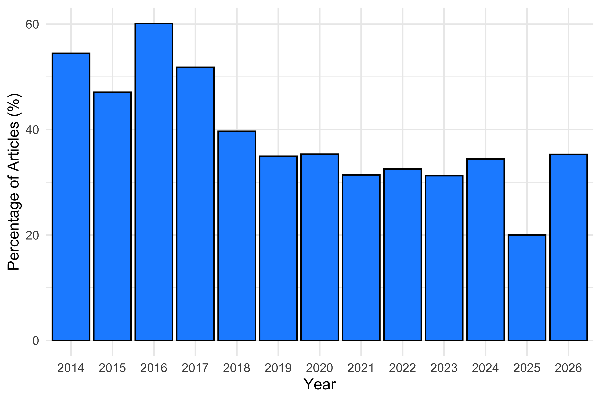
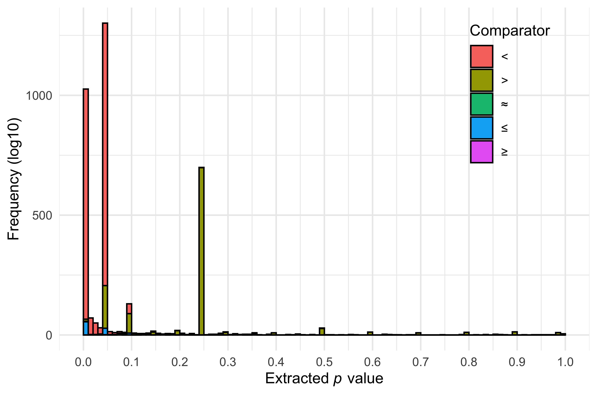
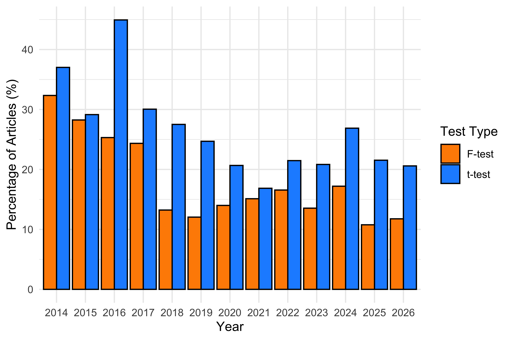

Part 1: Introducing Metacheck as an Automated Tool for Improving Research Practices in Psychology
Lisa DeBruine1, Daniël Lakens2, and Cristian Mesquida2
1Institute of Neuroscience and Psychology, University of Glasgow
2Industrial Engineering and Innovation Sciences, Eindhoven University of Technology
Author Note
Lisa DeBruine  https://orcid.org/0000-0002-7523-5539
https://orcid.org/0000-0002-7523-5539
Daniël Lakens  https://orcid.org/0000-0002-8393-5316
https://orcid.org/0000-0002-8393-5316
Cristian Mesquida  https://orcid.org/0000-0002-1542-8355
https://orcid.org/0000-0002-1542-8355
A reproducible version of this manuscript is available at XXX. The authors have no conflict of interest to declare.
Correspondence concerning this article should be addressed to Daniël Lakens, Industrial Engineering and Innovation Sciences, Eindhoven University of Technology, Den Dolech 2, 5600 MB, Eindhoven, Eindhoven, Email: D.Lakens@tue.nl
Abstract
Meta-scientific research has revealed that researchers often fall short in implementing best research practices when designing studies, reporting findings, citing the literature, or sharing data and code. Researchers face time constraints that limit the extent to which they can master all aspects of the research process, and cognitive constraints that limit which practices they remember to implement in their work. By capturing expert knowledge within an automated tool, we aim to elevate the quality of scientific research and disseminate best research practices more widely. We illustrate how best practices can be automatically detected by analyzing articles published in Psychological Science in the last decade. Researchers can use the tool before submitting or when reviewing scientific articles. Our modular tool can be easily extended by the research community to automatically check for best research practices, educate researchers, and improve the quality of scientific reporting.
Keywords: Peer Review, Quality Control, Automation, Open Data
Part 1: Introducing Metacheck as an Automated Tool for Improving Research Practices in Psychology
Introduction
Meta-scientific research demonstrates significant room for improvement in how researchers design studies, report findings, and implement open science practices when sharing their work. The uptake of best research practices is slow (Sharpe, 2013) and often suboptimal. For example, researchers often use invalid and unreliable measures (Goos et al., 2024), misinterpret non-significant results (Aczel et al., 2018), write insufficiently specific preregistrations (Akker et al., 2024), invalid power analyses (Thibault et al., 2024), and misuse Bayes factors (Tendeiro et al., 2024). Although it is the responsibility of researchers to keep up to date with best research practices, time constraints and the rapid pace of new developments make this challenging. Peer reviewers, similarly pressed for time, may not identify instances where best research practices are not followed. Checklists have the potential to increase the adoption of best practices, but in practice, they have limited impact, as researchers might not be aware of the existence of checklists and they still need sufficient expertise to evaluate whether they have adhered to items on the checklist (Dexter & Shafer, 2017).
Human factors research suggests that automation (where researchers remain in the loop) can offer a partial solution. Two recent developments have increased the possibility that best research practices can be automatically detected. First, meta-scientific research has identified where the adoption of best practices is lagging and offered concrete suggestions for improvement. This work often includes data that can be used as ground truth to validate automated checks. Second, advances in machine learning and artificial intelligence have made it easier to deal with written text, both when turning scientific articles into structured data files (e.g., using the GROBID machine learning library) and extract or classify information in written text. This has made it possible to develop algorithms that automatically emulate what experts do when they assess whether best research practices are present or absent. For example, a reviewer might search for the section in the paper that reports an a priori power analysis and then check whether authors have followed best reporting practices. Specifically, the reviewer would check whether authors report the alpha level, desired power, the effect size metric, a justification for the effect size, and the statistical test for each hypothesis tested (Lakens, 2022). If any of these components is missing, authors should be made aware that they are not following best research practices, so that the transparency of the power analysis can be improved. While many automated checks for best research practices will require only simple text matching based on regular expressions, more complex text extraction is possible using large language models (LLMs).
In this article, we introduce a new tool, Metacheck, which uses text search, code, and optional LLMs to extract information from scientific articles (e.g., the draft of a manuscript, submitted or published articles, or preregistration documents) and provide automated suggestions for improvement. Metacheck is inspired by quality control processes in software development. For example, R package developers run a set of automated checks before they submit their package to the Comprehensive R Archive Network (CRAN). The automated checks aim to identify any remaining issues and inform developers about how to fix them. The goal of Metacheck is to screen scientific manuscripts, identify areas for improvement based on algorithms that emulate what experts would do while checking a research article, and help researchers incorporate best research practices. The tool is modular, with a dedicated module for any practice that the research community wants to improve, and where automation offers a solution. This means the tool can be extended by the research community to fit their needs, and specialised modules can be created for different scientific fields based on what is considered best practice in that research area. The tool can reduce the burden on peer reviewers by resolving common problems before submission, allowing peer reviewers to focus on those issues that cannot be automatically detected.
Importantly, in Metacheck the use of LLMs is entirely optional and opt-in. Metacheck restricts LLMs to the classification of existing text, and the vast majority of modules work without an LLM; the only current exceptions are power and prereg_check. Finally, when users opt to use an LLM, models can be run locally, ensuring that no data leaves the user’s computer.
Automated checks can quite accurately identify the presence or absence of information that should be reported (e.g., the magnitude of the effect size for an a priori power analysis), but a bigger challenge is to evaluate whether the provided information is valid (e.g., is this effect size appropriately justified). Metacheck focuses on the first task, and leaves the evaluation to the user.
We will illustrate the potential of automated checks to improve best research practices in four areas: 1) experimental design, 2) open science practices, 3) statistical inferences, and 4) reporting guidelines. Finally, we will demonstrate the usefulness of our tool for efficiently processing text in scientific articles to perform menial tasks (e.g., check whether hyperlinks work), extract information from scientific articles for meta-scientific research, and incorporate existing automated checks (e.g., statcheck and check for citations to retracted articles) in a single modular workflow that can be expanded by the scientific community. We perform these checks on 1937 articles published in Psychological Science from 2014 to 2026. This set of articles contains studies from all subfields in psychology.
Use Cases
The current version of Metacheck can be used in two contexts. The first use case is by researchers — either authors or reviewers — who have the goal of improving a scientific manuscript by checking for the presence or absence of best research practices. Metacheck can provide recommendations that improve the manuscript in situations where 1) a practice is not sufficiently salient to the researcher to be noticed without assistance, 2) the researcher is not yet able to identify the absence of a practice manually due to a lack of knowledge or training, or 3) researchers do not have time to identify the practice manually. Researchers using Metacheck should be aware that recommendations generated by its modules can contain both false positive and false negative errors. A false positive error occurs when a module flags a practice that is not actually problematic, whereas a false negative error occurs when a module fails to identify a problematic practice. Since there is an inherent tradeoff between false positives and negatives, most of our modules work on a ‘smoke detector’ principle, prioritising detecting possible instances of a practice that can then be screened by the resaercher. This means that many practices may be automatically identified as problematic, while few are actually problematic upon closer inspection. However, it is still possible that instances are missed, even though they are are present.
As developers, our priority is to develop modules with error rates that are low enough not to impact the usability of Metacheck for users. Following the ISO 9241-11 definition, usability refers to “the extent to which a product can be used by specified users to achieve specified goals with effectiveness, efficiency, and satisfaction in a specified context of use”. Our working assumption is that preparing a scientific article takes a considerable amount of time, and that researchers care about the quality of their work. Under this assumption, we believe that a tool with high error rates — say up to 50% — will be considered sufficiently useful to be adopted as long as it accurately identifies some problematic research practices that researchers would not have identified themselves. For example, a spelling checker that marks ‘Metacheck’ and ‘manuscript’ as words with spelling errors, and does not mark ‘extend’ as a spelling error when the correct word would have been ‘extent’ remains useful as long as it takes relatively little time to evaluate the suggestions, even though its error rate is two out of three.
The second use case for Metacheck is as a meta-scientific tool to examine a large number of research articles. For example, a science funder might be interested in how many manuscripts by funded researchers share data and code in line with its policy. A meta-researcher might be interested in how many articles report effect sizes in a specific literature, and assess whether reporting practices have improved. A scientific journal might want to evaluate how a change in editorial practices has impacted the diversity in populations that are examined in the studies they publish. Metacheck modules can easily be run on large numbers of articles, facilitating text searches and the automatic extraction and classification of information. In this use case, the usability of an automated tool requires low error rates if users are to rely on the output of the tool. Here, false negative errors are problematic and difficult to identify, because identifying them requires users to manually screen all articles for instances that were missed by the modules, and if manual screening were feasible, there would be little need for an automated tool. False positive errors might be easier to identify but still require users to manually check all instances flagged by a module. Therefore, low error rates are important for the usability of Metacheck as a meta-scientific tool. Validation procedures that quantify error rates are essential to safeguard the accuracy of results, allow users to evaluate whether modules are accurate enough for their purposes, and to report the corresponding error rates when presenting results. It is possible that a module has low enough error rates for the individual use case, while still being too high for meta-scientific use cases.
Examples
In the following section, we demonstrate how to use selected Metacheck modules from both a researcher’s perspective and a meta-scientific perspective. All examples were produced using R (Posit team, 2026) and the following R packages: dplyr (Wickham, François, et al., 2026), ggplot2 (Wickham, Chang, et al., 2026), flextable (Gohel & Skintzos, 2026), metacheck (DeBruine et al., 2026), and stringr (Wickham, 2025). This article was written using Quarto (Allaire & Dervieux, 2025).
Checking Reported P values
The Journal Article Reporting Standards (JARS) developed by the American Psychological Association (APA) offer guidance on the information that should be reported in scientific articles to enhance their scientific rigour (Appelbaum et al., 2018). Almost every published scientific article could be improved if researchers diligently followed JARS. However, the guidelines are not widely known, rarely implemented by authors, and almost never checked by editors or reviewers. Manually checking whether all reporting standards are implemented would be effortful. Automation can help by automatically assessing whether recommendations are followed. The first reporting guideline that has been implemented in Metacheck concerns the the reporting of exact p values. The APA Manual states:
“Report exact p values (e.g., p = .031) to two or three decimal places. However, report p values less than .001 as p < .001.”
Access to precisely reported p values allows readers to include p values in meta-analytic tools, such as p-curve (Simonsohn et al., 2014) or z-curve (Schimmack & Brunner, 2017), and makes it possible to check the internal coherence of the reported results with tools such as Statcheck (Nuijten et al., 2016). Metacheck has a dedicated rule-based module, stat_p_exact, which returns all instances of imprecisely reported p values in scientific articles. For illustrative purposes, we run the module on a single paper and display, in Table 1, the p value that was reported with insufficient precision and the full sentence in which it was reported.
Table 1
Example output of the stat_p_exact module applied to a single paper.
Text | Expanded |
|---|---|
p < .01 | Greater aggression-antisociality predicted greater body size at all ages in this cohort, r = .14 (p < .01) at age 11, r = .19 (p < .001) at age 14, and r = .21 (p < .001) at age 17. |
The modules also provide a recommendation for improving the research practice associated with the warnings they detect. For example, the stat_p_exact module it returns the following recommendation:
“Reporting p values imprecisely (e.g., p < .05) reduces transparency, reproducibility, and re-use (e.g., in p value meta-analyses). Best practice is to report exact p values with three decimal places (e.g., p = .032) unless p values are smaller than 0.001, in which case you can use p < .001.”
All modules can be run in batch mode on a large number of articles, and the output can be used for meta-scientific research. One example is shown in Figure 1, which displays the proportion of imprecisely reported p values by statistical significance over time. The figure shows that the proportion of imprecisely reported p values is higher among significant than among non-significant results. Another example is shown in Figure 2, which displays the proportion of articles containing at least one imprecisely reported p values over time. The figure shows that there has been a decline in comparison to a decade ago.
Figure 1
Proportion of articles reporting imprecise p values by statistical significance.

Figure 2
Proportion of articles with at least one imprecisely reported p value.

Another example is illustrated in Figure 3, which shows the distribution of imprecisely reported p values over time. This type of overview can reveal interesting exploratory patterns, such as a large peak around p > 0.25. This may indicate that researchers commonly use 0.25 as a threshold for interpreting a result as non-significant, although the origin of this practice is unclear. One possible source is the recommendation to use an alpha level between 0.25 and 0.35 as a stopping criterion in forward step-wise selection procedures (Bendel & Afifi, 1977), which later popularized as alpha \le 0.25 in a widely used textbook on logistic regression (Hosmer Jr et al., 2013). However, we have no evidence this is the source of the convention. The correct approach for concluding that an effect is not meaningful (i.e., equivalent to zero) is to perform an equivalence test against a smallest effect size of interest (Lakens et al., 2018).
Figure 3
Distribution of imprecisely reported p values by comparator

The performance of the stat_p_exact module was evaluated on 225 open-access articles published in Psychological Science, for which a ground-truth dataset was manually created. This set of articles contained 405 instances of non-exact p values and 4635 instances of exact p values. It correctly detected 269 of 405 instances (66%) and incorrectly identified 78 instances (19%). The module missed 136 instances (34%) of imprecisely reported p values, and correctly identified 4557 instances of precisely reported p values.
We have also developed a related module, stat_p_nonsig that detects whether non-significant p values are reported in an article. When such results are identified, the module warns researchers against the common practice of interpreting non-significant p values as evidence of the absence of an effect and returns all sentences containing non-significant p values, allowing researchers to quickly check for potential misinterpretations. Table 2 displays the non-significant p value and the full sentence in which it was reported.
Table 2
Example output of the stat_p_nonsig module applied to a single article.
Text | Expanded |
|---|---|
p = .231 | Exclusions did not differ by condition (responsive questions vs. unresponsive advice), b = -0.04, SE = 0.03, t(471) = -1.20, p = .231, p adj = .273. |
When a non-significant p value is detected, the module provides the following recommendation on how to interpret the a non-significant result:
“Meta-scientific research has shown nonsignificant p values are commonly misinterpreted. It is incorrect to infer that there is ‘no effect’, ‘no difference’, or that groups are ‘the same’ after p > 0.05. It is possible that there is a true non-zero effect, but that the study did not detect it. Make sure your inference acknowledges that it is possible that there is a non-zero effect. It is correct to include the effect is ‘not significantly’ different, although this just restates that p > 0.05.”
The performance of the stat_p_nonsig module was evaluated on 194 open-access articles published in Psychological Science, for which a ground-truth dataset was manually created. The module correctly identified 1486 of 1602 instances of non-significant p values (93%) incorrectly classified 153 significant p values as non-significant.
Checking (Un)reported Effect Sizes
A second JARS guideline that can be checked automatically is whether effect sizes are reported alongside their statistical test result. Each statistical test (e.g., t-test or F-test) should be accompanied by the corresponding effect size (e.g., Cohen’s d or \eta_p^2). Metacheck includes a dedicated rule-based module, stat_effect_size, that identifies t-tests and F-tests not accompanied by an effect size estimate and flags these instances for researchers.
Figure 4 shows the results of applying the module to 1937 published articles in Psychological Science between 2014 and 2026. Approximately a decade ago, around 25% of articles reported t-tests or F-tests without an accompanying effect size. By 2024, this proportion had declined to between 10% and 15%, suggesting a substantial improvement in reporting practices. Tools such as Metacheck may help reduce this percentage even further by identifying missing effect sizes before manuscripts are submitted or published.
The performance of the module was evaluated on 250 open-access articles published in Psychological Science, from which t-tests and F-tests were manually extracted to create a ground-truth dataset. The module correctly identified 100% of t-tests reported with effect sizes, 99% of t-tests reported without effect sizes, 99% of F-tests reported with effect sizes, and 100% of F-tests reported without effect sizes. This level of accuracy is sufficient for meta-scientific research, such as examining trends in adherence to reporting guidelines over time.
Figure 4
Proportion of articles reporting t-tests or F-tests without effect sizes.

Another feature of the stat_effect_size is that it checks whether reported effect sizes are consistent with the corresponding test statistic and degrees of freedom. For t-tests, it checks Cohen’s d and Hedges’ g, while for F-tests, it checks \eta_p^2 and \omega_p^2. Importantly, reporting an effect size such as d = 0.3 does not provide an information about the study design (i.e., whether the comparison is between or within subjects). The module therefore computes d under several plausible assumptions, including a Cohen’s paired d_z, independent with equal sample sizes, and a range of possible sample sizes for independent samples. If any of the recomputed effect sizes matches the reported effect size, the result is deemed as consistent. Table 3 displays some of the information returned by the module when checking the consistency of effect sizes in a single article. The first example shows a reported effect size that does not match the value implied by the t-test under any of the tested assumptions, whereas the second is consistent with an independent-samples t-test assuming equal sample sizes.
Table 3
Example output of stat_effect_size when checking the consistency of reported effect sizes with the corresponding test statistic and degrees of freedom.
Text | Effect Size | Coherence | Note |
|---|---|---|---|
t(169) = 1.01 | Cohen's d = 1.38 | no_match | No match under tested assumptions (paired dz, independent equal-n, independent unequal-n range). Tolerance = 0.01. A no-match can occur when fewer than 2 decimal places are reported. |
t(183) = 2.63 | d = 0.39 | match_under_assumptions | Match under independent-samples equal-n assumption (n1 = n2 = 92.5, N = 185). |
Checking Power Analyses
To design an informative study, researchers should collect a sufficient number of observations. The chosen sample size should be justified with respect to the study’s inferential goal (Lakens, 2022). One approach to do this is by performing an a priori power analysis. When such analysis is performed, it should be reported transparently so that peers can evaluate it.
A transparent power analysis report includes the type of analysis (e.g., a priori, compromise, sensitivity), the statistical test for which it was conducted (e.g., an independent t-test, a within-between interaction in a 2 x 2 ANOVA), the effect size metric (e.g., Cohen’s d, r or an odds ratio), the magnitude of the assumed effect size (e.g., 0.3), the desired level of power (e.g., 95%), and critical alpha (e.g., 0.05). In practice, however, many articles omit one or more of these elements, making it difficult to evaluate the power analysis. In addition, some researchers perform post hoc power analyses based on the observed effect size and collected sample size, even though this practice is widely recognized as uninformative and should be avoided (Hoenig & Heisey, 2001).
The power module is designed to help researchers report power analyses more completely while discouraging the use of post hoc power analyses. The module consists of two approaches. The first uses regular expressions (i.e., rule based) to identify sentences describing a power analysis and classifies them as a priori, sensitivity or post hoc. This component is limited to the classification of power analyses and does not extract the reported components (e.g., effect size metric, statistical test).
To identify potential power analyses, the module searches for paragraphs that satisfy three criteria: they contain the standalone word power (or powers/powered), at least one term associated with power analyses (e.g., effect size, sample size, a priori, sensitivity, or post hoc), and at least one numeric value, excluding four-digit numbers that are likely to represent publication years. Because this approach relies on regular expressions, only power analyses that explicitly contain terms such as “a priori”, “sensitivity” or “post hoc” can be classified. For example, the detected power analysis shown in Table 4 cannot be classified (i.e., “unknown”) because it does not contain any of these expressions.
Table 4
Example output of the power module using the rule-based approach when the analysis cannot be classified.
Power | Text |
|---|---|
unknown | Power analyses of the results from Experiment 1 suggested that we would have 90% power to detect the effect with approximately 37 participants in each condition, or 148 participants total |
Table 5 shows the number of power analyses detected using the rule-base approach by category. Out of all 1824 reported power analysis (although these include some double counted due to overlapping sentences), 1483 could not be classified, 198 were classified as “a priori”, 107 were classified as “sensitivity” and 36 were classified as “post hoc”.
Table 5
Classification of power analyses by category using the rule-based approach.
Power | Cases | Percent |
|---|---|---|
apriori | 198 | 11% |
posthoc | 36 | 2% |
sensitivity | 107 | 6% |
unknown | 1,483 | 81% |
Although reporting a post hoc power analysis is relatively uncommon, it is uninformative and is therefore worth identifying through an automated reporting tool. When a post hoc power analysis is detected, the module returns the following warning:
You reported a power analysis that has been classified as ‘post hoc’. Calculating observed power is almost never useful. If you actually performed a sensitivity power analysis, label it as such explicitly.
So far, we have classified power analyses using only a rule-based approach. However, a limitation of currently reported power analyses is the lack of standardization in how their components are described and reported. This lack of standardization makes it difficult, if not impossible, to reliably extract relevant information using a rule-based approach alone. This limitation can be partially addressed by using an LLM to classify and extract information from reported power analyses.
Importantly, the LLM-based approach is opt-in. By default, the module operates without using an LLM. Users can enable this functionality by setting llm_use(TRUE). When enabled, the module first applies the rule-based approach to reduce the number of calls to the LLM. Paragraphs identified as potentially containing power analyses are then submitted to an LLM of the user’s choice.
Another important feature of the power module is that the LLM can be accessed either through an API or locally on the user’s computer. By default, Metacheck uses the Groq API, an artificial intelligence inference service that provides access to multiple language models, including the open-source Ollama models, to process the LLM component. However, users may prefer to ensure that data does not leave their computer, for example when working with sensitive or confidential materials. In such cases, the module can be configured to run models locally, such as Ollama.
Based on a predefined prompt, the LLM returns a JSON-structured output containing the identified power analysis components. The module then uses this standardized output to identify missing reporting components and provide feedback on the completeness of the reported power analysis (this feedback is not generated nby the LLM; it is only used for classification). An additional advantage of the LLM-based approach is that multiple power analyses are often reported within a single paragraph. The prompt submitted to the LLM therefore instructs the model to return separate outputs when multiple power analyses are identified within the same paragraph. Table 6 reports the cases and proportion of components identified in a sample of 1937. To generate these results, the power model was run using the locally hosted Ollama model qwen3.5:9b.
Table 6
Proportion of missing components from 1295 power analyses.
Component | Missing | Percent |
|---|---|---|
effect_size | 420 | 32% |
power | 199 | 15% |
alpha_level | 868 | 67% |
sample_size | 240 | 19% |
power_type | 0 | 0% |
software_combined | 920 | 71% |
effect_size_metric_combined | 361 | 28% |
statistical_test_combined | 279 | 22% |
Note. The number of missing cases for ‘power_type’ is 0 because the LLM classified all instances into a power-analysis category.
For the 1937 articles published in Psychological Science, the module using the LLM-based approach currently identifies and extracts information from 663 articles containing 1295 sentences identified as reporting power analyses. Not all missing information is equally problematic. For example, a missing alpha level is less concerning because the conventional value of 5% is used in most studies, although some researchers use more stringent thresholds (e.g., 0.01) or adjust alpha levels to account for multiple comparisons. By contrast, missing information about the statistical test is more concerning given the multiplicity of statistical tests used in psychology articles. Missing the expected effect size is also particularly problematic because this component is central to justifying the planned sample size.
Given the lack of standardization in how power analyses are reported, and the complexity of human language, false positive and negative errors should be expected. For an example, the sentence “Null of 33% power Note: The observed p-curve includes 29 statistically significant (p < .05) results, of which 14 are p < .025. There were 8 additional results entered but excluded from p-curve because they were p > .05.” was incorrectly classified as a sentence describing a power analysis (i.e., a false positive) due to the presence of a significance level threshold, and numbers of entities included and excluded in the analysis.
The following sentence is an example of a false negative error: “We attempted to recruit 200 participants to have sufficient power to detect a small to moderate effect size, but in recruiting groups of friends on campus, we ended up with 199 fluent English speakers (105 female)”. This statement provides too little information about the details of the power analysis to be classified as one. False positive errors are annoying, but this annoyance is hopefully in the long run compensated by the benefits of a tool such as Metacheck. False negative errors miss an opportunity to inform users of best research practices. However, it is possible to still report the result of the power module by stating that no reported power analyses were identified, and informing users that if this is incorrect, they might want to reconsider whether the way they reported the power analysis is clear enough for human readers. A statement such as “We performed an a-priori power analysis for a one-sided dependent t-test with an alpha level of 0.05, a desired power of 0.95, an effect size of interest of d_z = 0.2, which lead to a required sample size of N = 272” should have a very high probability of being automatically detected and should allow all components to be automatically retrieved by the module using the LLM-based approach.
The performance of the power module was evaluated on 250 open-access articles published in Psychological Science, for which a ground-truth dataset was manually created. Accuracy was highest for identifying the alpha level (0.89), software used for the analysis (0.84) and achieved power (0.83). Accuracy was also relatively high for extracting the expected effect size (0.76) and sample size (0.73), and moderate for identifying the statistical test (0.7). The lowest accuracy was observed for the type of power analysis (0.52) and the metric used to express the expected effect size (0.59). These results indicate that the module performs better for components that are typically reported using standardized numerical values or commonly recognized software names, whereas components that depend more heavily on contextual interpretation or inconsistent reporting terminology are more challenging to extract accurately.
Checking Statements
So far, we have focused on modules that capture expertise about best research practices. However, an additional category is checks that do not require expertise but still benefit from automation. These checks can be time consuming and may be overlooked by researchers despite being relatively straightforward to perform. We will illustrate the usefulness of Metacheck for automating such routine tasks with the rule-based module open_practices.
This module searches for statements indicating that data, code, materials, or preregistration are openly available. It returns the sentences in which such statements are identified and classifies, for each type of open practice, whether a corresponding statement was detected.
Table 7 shows the results of applying the module to a single article. The first statement indicates that both data and code are available, whereas the second indicates the availability of code only. The third statement reports that data, analysis code, and experimental scripts are publicly available. Therefore, the three statements have been correctly identified.
Table 7
Example output of the open_practices module applied to one single article
Text | Data | Code | Materials | Preregistration |
|---|---|---|---|---|
Scripts to run the experiment, analysis scripts, and data are available at this project's Open Science Framework page (https://osf.io/tav35/). | true | true | false | false |
All codes relevant to analysis of the main and supplemental findings are available at this project's Open Science Framework page (https://osf.io/tav35/). | false | true | false | false |
All data, analysis code, and scripts to run the experiment have been made publicly available via OSF and can be accessed at https://osf.io/tav35/. | true | true | false | false |
The module also flags statements indicating that data or materials are available only upon request. For example, in the sample of 1937 articles, the module identified 64 such statements. When an upon-request statement is detected, the module returns the following warning:
Some materials are shared on request, which is not an acceptable method of sharing. This is based on the following text:
Data for the present experiments are available on request from the corresponding author.
Checking References
Metacheck includes several modules that use the references list of an article to perform automated checks, such as checking Retraction Watch to determine whether cited articles have corrections, expressions of concern, or retractions; identifying cases in which an original article is cited even though a direct replication study of the same article exists but has not been cited (Röseler et al., 2024); identifying incoherent references; and identifying whether cited articles have comments on PubPeer. Such comments may be worth knowing about, as they can range from minor clarifications to serious concerns about the work.
For illustrative purposes, we demonstrate the ref_pubpeer module. If the module detects that a cited article has a comment on PubPeer, it returns the following warning:
“We checked 9 references with DOIs. You cited 2 references with comments in PubPeer. Pubpeer is a platform for post-publication peer review. We have filtered out Pubpeer comments by ‘Statcheck’.
The module reports which cited references have comments on PubPeer, the number of comments, and a link to the corresponding discussion, allowing users to assess the relevance of the discussion themselves. As an illustration, Table 8 shows the DOIs of two cited articles with 13 and 2 PubPeer comments, respectively, together with links to the corresponding discussions.
Table 8
Example output of the ref_pubpeer module applied to one single article.
DOI | Comments | URL |
|---|---|---|
10.1177/0956797610383437 | 13 | https://pubpeer.com/publications/69477CA2ACFC09B9239A8A256F143C |
10.1177/0956797613492425 | 2 | https://pubpeer.com/publications/9B511C4BEA5563F50E0BC6DDF1A00B |
Creating Metacheck Modules
Metacheck is modular by design. Its modules are conceptually similar to functions in R packages: each module performs a specific automated check. This architecture reflects a core value of Metacheck: community engagement and epistemic diversity. Decisions about what constitutes best research practice should emerge through scientific discussions rather than be imposed by a single group. We have therefore designed Metacheck to make it as straightforward as possible for researchers to translate their own views on best practices into modules.
Anyone can develop a module and validate its performance. Modules can be developed and installed locally or contributed to the Metacheck R package through a GitHub pull request. This flexibility enables journals to develop modules that verify compliance with their submission guidelines, methodological experts to automate checks for issues they frequently identify during peer review, and organizations to create modules that assess adherence to reporting guidelines that they publish.
Metacheck can also serve as a hub for existing automated tools. Researchers often need to use multiple software packages, websites, or online services to evaluate different aspects of a manuscript. Integrating these checks into a single tool simplifies this workflow and may also increase awareness of tools that researchers would otherwise not discover.
As proof of concept, we developed a Metacheck module for Statcheck (Nuijten et al., 2016). However, consistent with Metacheck’s emphasis on validated automated checks, the module only implements analyses for which Statcheck’s performance has been empirically evaluated. An initial study indicated that for t-tests, F-tests, and \chi^2 tests, Statcheck achieved a true positive rate of 85.3%, increasing to 100% when one-tailed tests were explicitly identified using terms such as “one-tailed”, “one-sided”, or “directional”. In contrast, Statcheck has not been validated for correlations (r) tests or Z-tests, and anecdotal evidence suggests substantially lower accuracy for these tests. Accordingly, the Statcheck module excludes correlation tests and Z-tests by default until their performance has been validated.
Similarly, we have developed a Metacheck module for RegCheck, a fully automated comparison tool that uses LLMs to compare a manuscript with its preregistration (Cummins et al., 2026). Metacheck also has a module that checks preregistrations, but it takes a slightly different approach. Rather than relying on LLM-based comparison, it retrieves the preregistration from the Open Science Framework or AsPredicted and extracts the preregistered sample size, taking advantage of their structured templates. Metacheck then presents this information alongside the manuscript, allowing users to quickly compare the preregistered and the reported sample sizes.
Discussion
To prevent the widespread misuse of an automated tool such as Metacheck, it is important to recognize its limitations. Although it may seem desirable for every module to achieve very high accuracy, a cost-benefit analysis suggests that, at this stage, it is more valuable to develop a broad range of modules that provide useful assistance despite moderate error rates than to devote the same effort to a small number of modules that achieve near-perfect accuracy and are primarily suitable for meta-scientific research. This trade-off reflects the inherent complexity of scientific writing. The flexibility of human language, combined with the lack of standardization in how information is reported in manuscripts, means that reducing a module error rate from 50% to 20% is often substantially easier than reducing it from 20% to 5%. Consequently, our current development strategy follows the Pareto principle: the priority is building modules that identify the relatively small number of common reporting errors that account for most avoidable errors. In other words, we focus on the 20% of issues that, when detected, help prevent 80% of reporting errors.